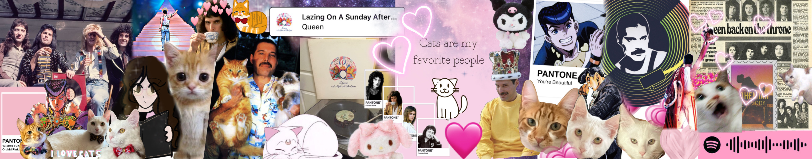
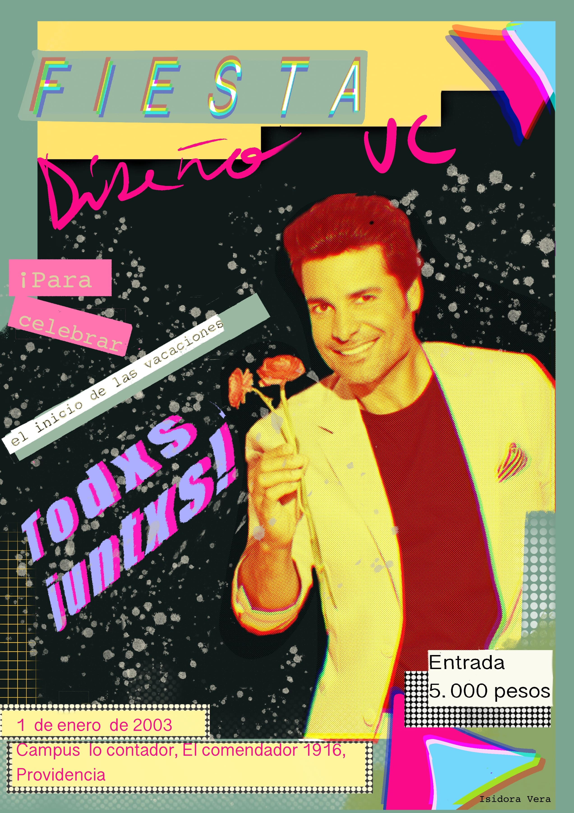

Isidora Vera
Sobre mí
Estudiante de Diseño que cursa actualmente su primer año (segundo semestre).
Me gusta dibujar, leer, escribir, ver películas y series y jugar videojuegos.
Amante de los gatitos y la buena música.
"Sic Parvis Magna"Información Personal
Fecha de nacimiento: 07 de diciembre de 2003
Edad: 19 años
Ubicación: Santiago, Chile
Contacto
isidora.vera@uc.cl
Cuenta personal de instagram @_.gingerwithlemon._
Cuenta de arte de instagram @vikaizzy
Mis intereses
Diseño gráfico, de interiores y de ilustración.
Escritura.
Formación Académica
Colegio Particular Holanda (2008-2015)
Liceo San Pedro Poveda (2016-2021)
Pontificia Universidad Católica de Chile (2022-actualidad)
Habilidades
Nivel de Inglés B1
Ilustración tradicional y digital.
Pintura en acuarela y marcadores.
Manejo Avanzado en softwares de ilustración y vectorización: Medibang, Paint tool sai, Procreate, vectornator y figma.
Manejo Básico en HTML.
Habilidad intermedia en Guitarra, flauta y teclado. Básica en Ukelele y avanzada en metalófono.
Portafolio
 